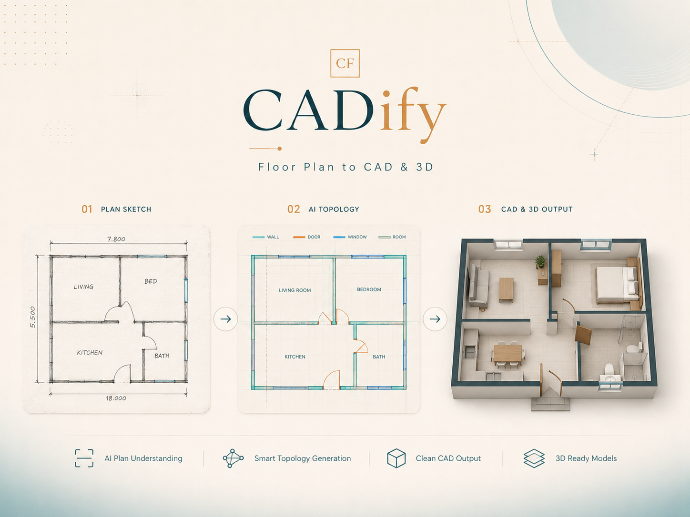

A polished overview of the complete image → topology → CAD/3D workflow.
CADify
AI-powered floor plan to editable CAD/DXF and 3D workflow.
I designed and developed the complete topology reconstruction stage, including connectivity, junctions, openings, rooms, structured JSON handoff, evaluation, FastAPI integration, and Modal deployment.
15manually labeled plans
0.93wall F1
0.99door/window F1
3h → 1–2mworkflow time